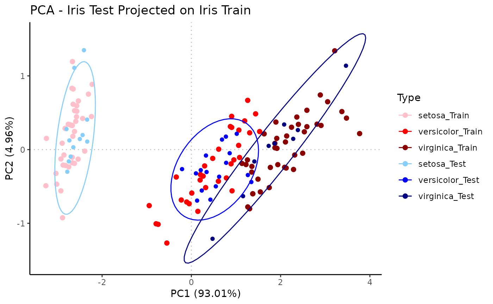

PCA prediction by projecting query/test samples onto PCA of reference/train samples
Source:R/PCA.R
predict_PCA.RdPlot titles are automatically constructed based on parameters. Adding a savedir argument will result in intermediate plots and final projected scores to be output.
Usage
predict_PCA(
train,
test,
scale = FALSE,
varimax = FALSE,
train_name = "Train",
train_anno = NULL,
train_annoname = NULL,
train_annotype = NULL,
train_colors = NULL,
test_name = "Test",
test_anno = NULL,
test_annoname = NULL,
test_annotype = NULL,
test_colors = NULL,
ellipse = FALSE,
label = FALSE,
flip = FALSE,
savedir = NULL,
height = 8,
width = 8,
fmt = "png",
test_only_plt = FALSE,
rank = 3
)Arguments
- train
string/df; filepath to/df of reference/train samples data, genes/features as rownames, samples/observations as colnames
- test
string/df; filepath to/df of query/test samples data, genes/features as rownames, samples/observations as colnames
- scale
logical; T to scale variables to unit variance
- varimax
logical; T to perform varimax rotation on train + test
- train_name
string; descriptor for train samples
- train_anno
df; annotation info for train samples
- train_annoname
string; colname in
train_annomatching point name- train_annotype
string; colname in
train_annowith info to color by- train_colors
char vector; list of colors, length = # of unique
train_annotype, setNULLfor gray- test_name
string; descriptor for test samples
- test_anno
df; annotation info for test samples
- test_annoname
string; colname in
test_annomatching point name- test_annotype
string; colname in
test_annowith info to color by- test_colors
char vector; list of colors, length = # of unique
test_annotype- ellipse
logical (vector); if length 2,
ellipse[1]for train data ellipse,ellipse[2]for test data ellipse- label
logical (vector); if length 2,
label[1]for train data label,label[2]for test data label- flip
NOT IMPLEMENTED - logical (vector); if length 2,
flip[1]to flip x-axis values,flip[2]to flip y-axis values- savedir
string; directory (+ prefix) to save output under; if directory, end string with "/"
- height
numeric; plot height
- width
numeric; plot width
- fmt
string; plot output format (ex. "png", "pdf")
- test_only_plt
logical; save scatter of projected test samples only
- rank
integer; maximal # of PCs to be used in
prcomp; for compatibility w/ glab version
Examples
library(dplyr)
data(iris)
iris$Sample <- rownames(iris)
set.seed(13)
samp <- sample(nrow(iris), nrow(iris)*0.75) # Train data is 75% of iris
iris_train <- iris[samp,] %>%
mutate(Batch = "Train",
Species = paste0(Species, "_Train"))
iris_test <- iris[-samp,] %>%
mutate(Batch = "Test",
Species = paste0(Species, "_Test"))
Rubrary::predict_PCA(
train = t(iris_train[,1:4]),
test = t(iris_test[,1:4]),
train_name = "Iris Train", train_anno = iris_train[,c("Sample", "Species")],
train_annoname = "Sample", train_annotype = "Species",
train_colors = c("pink", "red", "darkred"),
test_name = "Iris Test", test_anno = iris_test[,c("Sample", "Species")],
test_annoname = "Sample", test_annotype = "Species",
test_colors = c("lightskyblue", "blue", "navy"),
ellipse = c(FALSE, TRUE), label = FALSE
)
#> Common features: 4
